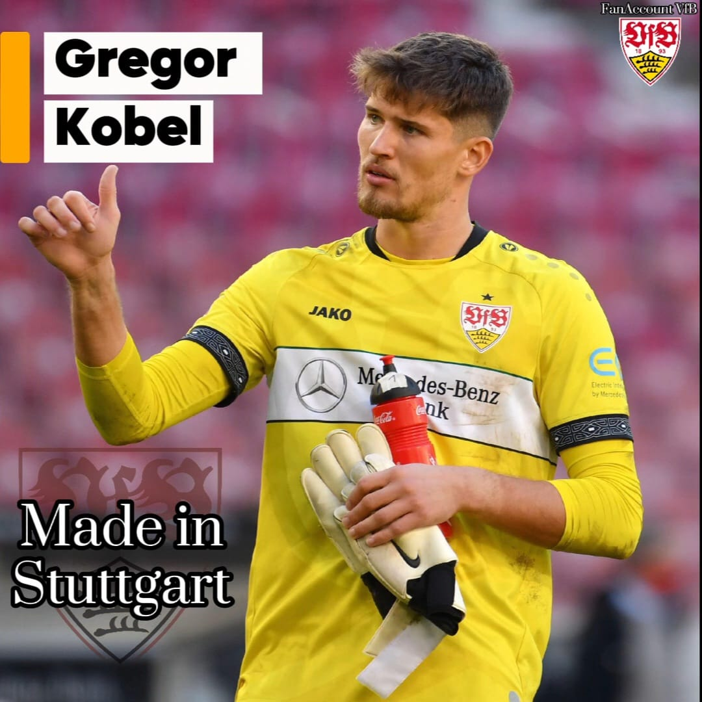
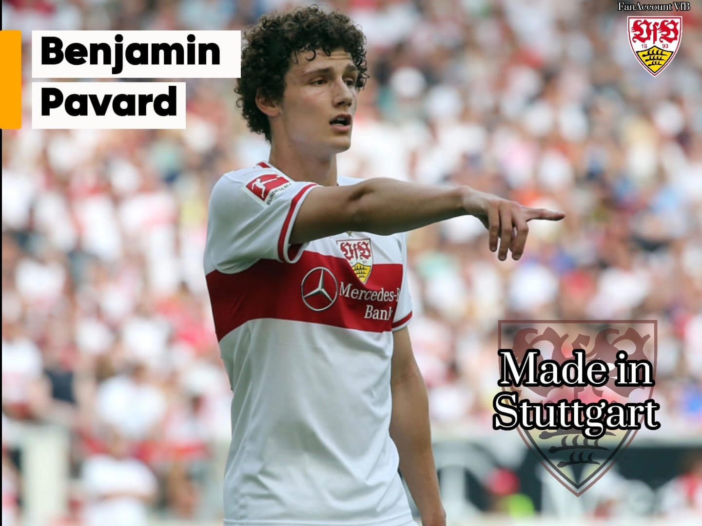
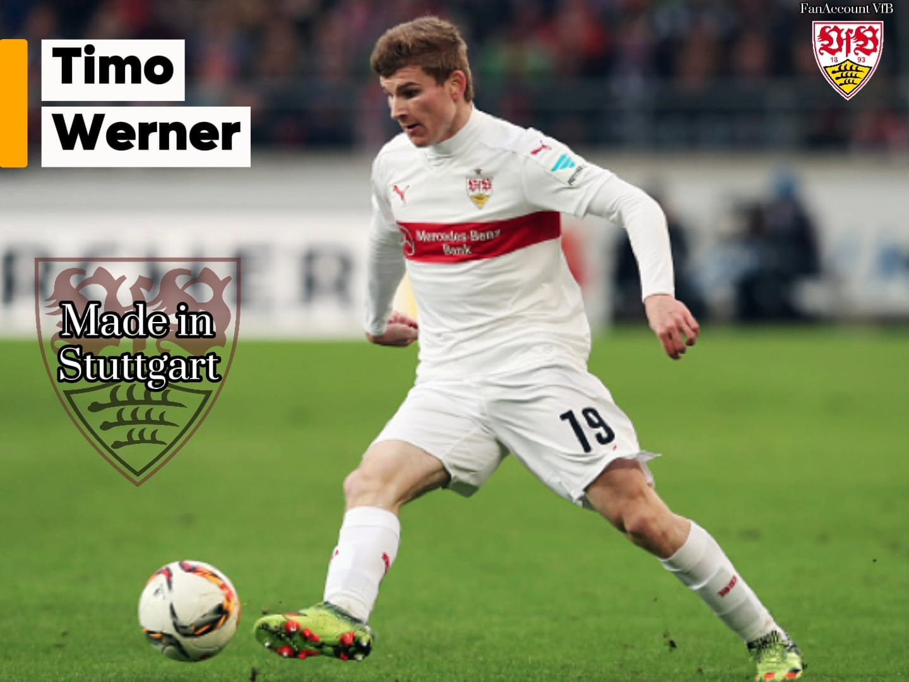
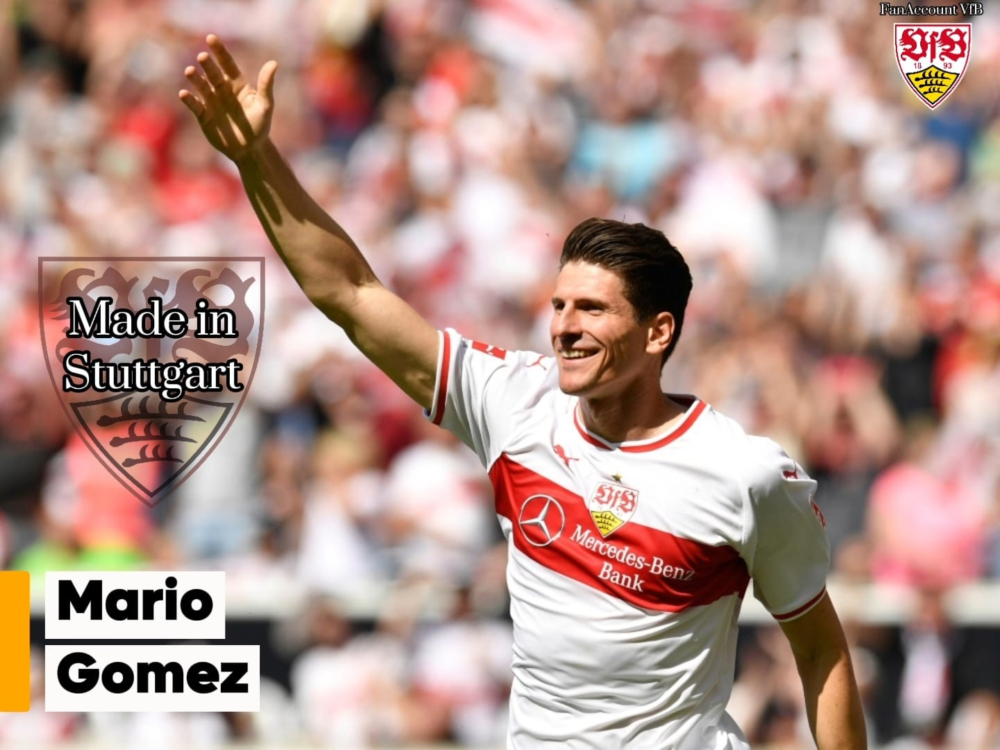
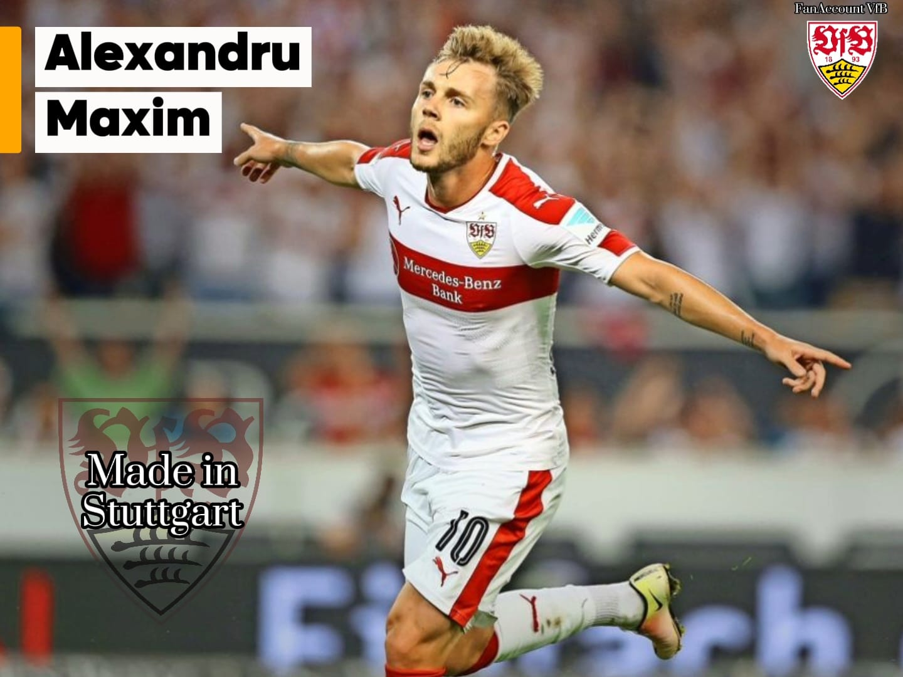
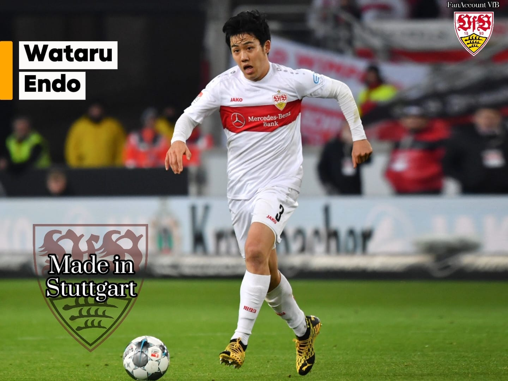
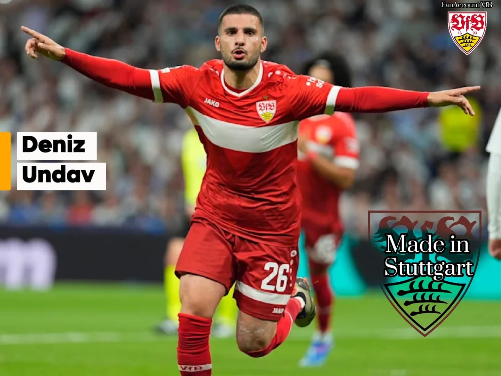
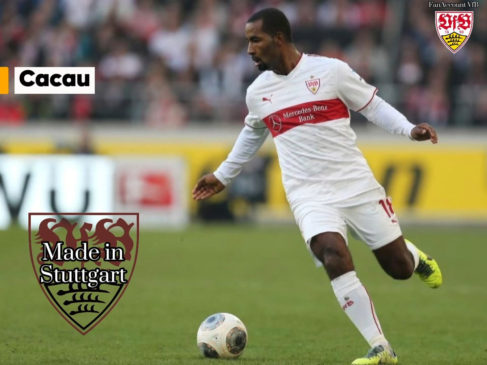
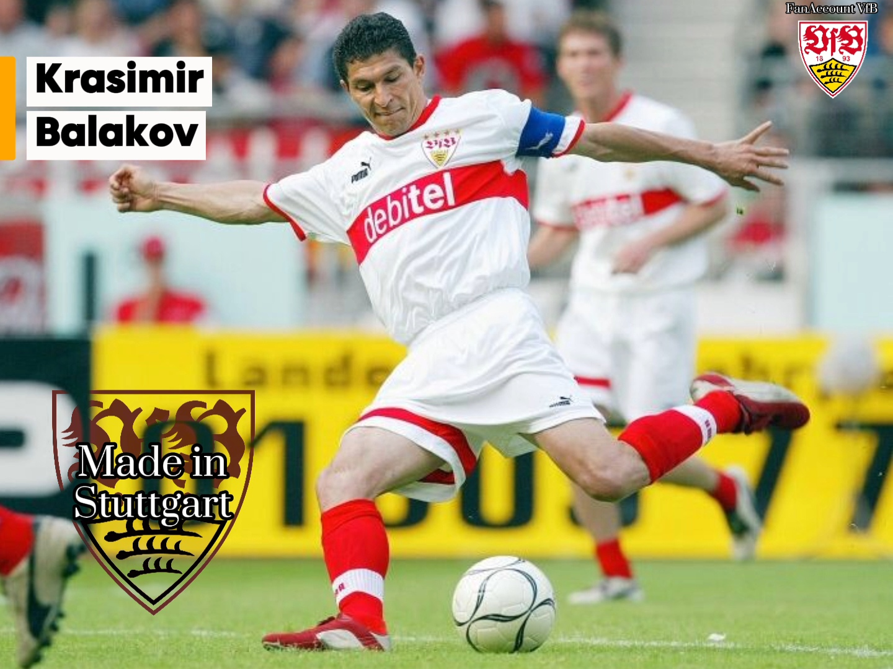
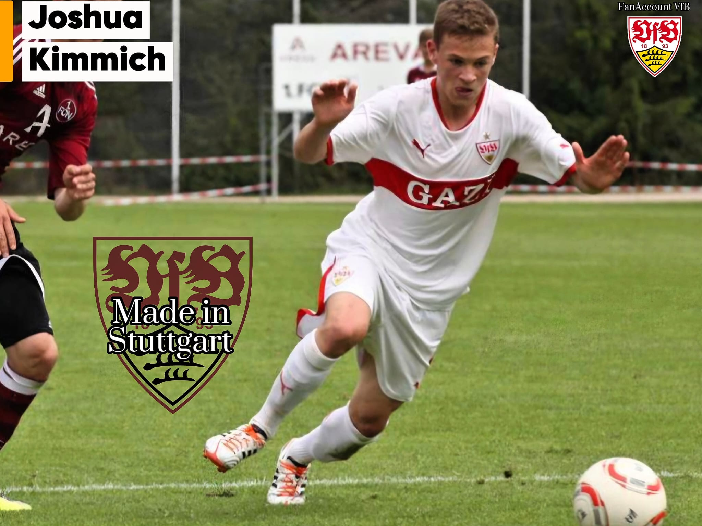

Gregor Kobel, geboren 1997, wechselte 2019 zum VfB Stuttgart und blühte dort so richtig auf. 2021 wechselte er dann für 15 Millionen zum BVB wo er jetzt immer noch spielt. Episode 1 | 𝕸𝖆𝖉𝖊 𝕴𝖓 𝕾𝖙𝖚𝖙𝖙𝖌𝖆𝖗𝖙
Hier findest du alle Made in Stuttgart auf einen Blick
Made in Stuttgart ist ein eigenes ausgedachtes Format unserer seits. Hier kommen VfB Legenden, wichtige Playmaker aber vor allem Spieler, die beim VfB ihren Durchbruch hatten. Viele Spieler waren dabei sogar in der Jugendakademie vom VfB selbst oder wurden schon in jungen Jahren vom Traditionclub gekauft.

Gregor Kobel, geboren 1997, wechselte 2019 zum VfB Stuttgart und blühte dort so richtig auf. 2021 wechselte er dann für 15 Millionen zum BVB wo er jetzt immer noch spielt. Episode 1 | 𝕸𝖆𝖉𝖊 𝕴𝖓 𝕾𝖙𝖚𝖙𝖙𝖌𝖆𝖗𝖙

Benjamin Pavard wechselte in der Saison 2016/17 zu dem VfB wo er 3 Jahre verbrachte. Für 35 Millionen ging es dann zu den Bayern. Gerade ist er per Leihe bei Olympique Lyon. Episode 2 | 𝕸𝖆𝖉𝖊 𝕴𝖓 𝕾𝖙𝖚𝖙𝖙𝖌𝖆𝖗𝖙

Timo Werner, geboren in Bad Cannstatt, verbrachte seine ganze Jugend beim VfB Stuttgart. Viele kennen ihn vom FC Chelsea dort verbrachte er 2 Jahre. Mittlerweile spielt er bei den San Jose Earthquakes. Episode 3 | 𝕸𝖆𝖉𝖊 𝕴𝖓 𝕾𝖙𝖚𝖙𝖙𝖌𝖆𝖗𝖙

Mario Gomez, Vereinslegende, Kapitän und Spielmacher. Mario "Garcia" Gomez wurde 1985, ebenfalls im Schwabenland geboren und wechselte mit 15 schon zum VfB wo er dann Sage und Schreibe 10 Jahre verbrachte!! Er verließ uns für die Bayern 2009. 2017 kam er zurück zum VfB wo er nochmals 2 Jahre spielte! Insgesamt machte er 110 Tore in 230 Pflichtspielen. Danke Mario für deine Zeit beim VfB Stuttgart. Episode 4 | 𝕸𝖆𝖉𝖊 𝕴𝖓 𝕾𝖙𝖚𝖙𝖙𝖌𝖆𝖗𝖙

Alexandru Maxim gebürtiger Rumäne wechselte 2013 zum VfB Stuttgart. Der VfB war sein erster richtiger TopClup in Europa. Maxim spielte 5 Jahre bei den Schwaben und ging dann zum Karnevalsverein nach Mainz! Heute spielt er in der Türkei bei Gaziantep GK. Episode 5 | 𝕸𝖆𝖉𝖊 𝕴𝖓 𝕾𝖙𝖚𝖙𝖙𝖌𝖆𝖗𝖙

Wataru Endo, gebürtiger Japaner, wurde 2019 an den VfB verliehen und spielte dann für 1 Jahr bei uns und wechselte dann per Kaufoption vollständig zum VfB Stuttgart! 2023 ging er dann zum FC Liverpool wo er auch Erfolge sammeln konnte. Wer kann sich noch an sein entscheidendes Tor gegen den 1. FC Köln , wo Endo uns vor der Relegation bewahrtete, erinnern??!! Episode 6 | 𝕸𝖆𝖉𝖊 𝕴𝖓 𝕾𝖙𝖚𝖙𝖙𝖌𝖆𝖗𝖙

Deniz Undav, geboren 1996, wurde bei Weder Bremen in der Jugend als Knipser aussortiert und ging über den TSV Havelse, zu Einracht Braunschweig 2! Brighton lieh Deniz dann an Union Saint-Gilloise aus und dort erzielte er seinen Durchbruch! 2 mal Torschützen König und beförderte Union SG dann in die erste Belgische Liga! Bei Brighton bekam er dann kaum Chancen woraufhin der VfB auf ihn aufmerksam wurde! Erst kam er per Leihe zu den Schwaben und 2024 unterschrieb der Fanliebling seinen langfristigen Vertrag! Episode 7 | 𝕸𝖆𝖉𝖊 𝕴𝖓 𝕾𝖙𝖚𝖙𝖙𝖌𝖆𝖗𝖙

Cacau, geboren in São Paulo, wechselte aus Brasilien nach Nürnberg und von dort dann zum VfB Stuttgart! Er war ein wichtiger Schlüsselspieler in der Meistersaison 2006/07! Heute ist er schon in Rente. Cacau ist aber definitiv eine VfB Legende! Episode 8 | 𝕸𝖆𝖉𝖊 𝕴𝖓 𝕾𝖙𝖚𝖙𝖙𝖌𝖆𝖗𝖙

Krassimir Balakov feiert heute seinen 60. Geburtstag. Und deshalb ein Made In Stuttgart von Bala 298 Pflichtspiele, 73 Tore, 66 Assists – DFB-Pokalsieger 1997, eine ganze Generation von VfB-Fans geprägt und gemeinsam mit dem „Magischen Dreieck“ das Stadion verzaubert. Er kam von Sporting Lissabon für eine knappe Millionen und verbrachte dann seine halbe Karriere beim VfB Stuttgart 2003 beendete er seine Karriere bei den Schwaben. Episode 9 | 𝕸𝖆𝖉𝖊 𝕴𝖓 𝕾𝖙𝖚𝖙𝖙𝖌𝖆𝖗𝖙

Viele wissen es kaum aber Joshua Kimmich spielte in seiner ganzen Jugend beim VfB Stuttgart! Der Defensivspieler wechselte schon 2007 zu den Schwaben, da war er gerade mal 11. Von 2007 bis 2015 spielte er, mit einer Pause in Leipzig, bei uns Schwaben und ging dann für knappe 9Mio zu den Bayern. Heute ist er Nationalmannschaft Kapitän und einer der wertvollsten Spieler in der Bundesliga! Episode10 | 𝕸𝖆𝖉𝖊 𝕴𝖓 𝕾𝖙𝖚𝖙𝖙𝖌𝖆𝖗𝖙